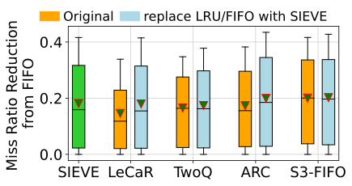

Caching has sort of become an indespensable part of backend systems, allowing systems to achieve millisecond
latency and deliver at scale. Many of the popular caching techniques involve FIFO (first in first out), LRU
(least recently used), MRU (Most Recently Used) amongst others. Lately SIEVE is gaining a lot of traction in
large scale systems at organisations like Google and Meta.
SIEVE was compared against
other strategies in this paper last year and presents a unique eviction strategy
aimed at maximising efficiency and reducing the cache miss ratio. The work compares web cache workloads and
finds SIEVE to have a better miss ratio than ARC.
A sieve cache is a smart caching strategy that selectively stores only valuable or frequently
accessed data, instead of blindly caching everything. This is particularly useful in systems with limited memory
or unpredictable access patterns.
Inspired by the Second-Chance or Clock algorithm, the sieve cache gives each cache item a
"second chance" before eviction. Each item has a visited flag to determine whether it was accessed
recently.
visited = true.The cache uses a "hand" pointer to iterate through the nodes. It searches for an unvisited node to evict. If it finds a visited one, it resets the visited flag and continues.
Click the button below to simulate accessing a sequence of items: A, B, C, A, D.
class Node:
def __init__(self, value):
self.value = value
self.visited = False
self.next = None
self.prev = None
class SieveCache:
def __init__(self, capacity):
self.capacity = capacity
self.cache = {}
self.head = None
self.tail = None
self.hand = None
self.size = 0
def add_to_head(self, node):
node.next = self.head
node.prev = None
if self.head:
self.head.prev = node
self.head = node
if self.tail is None:
self.tail = node
if self.hand is None:
self.hand = self.tail
def remove_node(self, node):
if node.prev:
node.prev.next = node.next
else:
self.head = node.next
if node.next:
node.next.prev = node.prev
else:
self.tail = node.prev
def _evict(self):
if self.hand is None:
self.hand = self.tail
start = self.hand
while self.hand and self.hand.visited:
self.hand.visited = False
self.hand = self.hand.prev or self.tail
if self.hand == start:
break
node_to_remove = self.hand or self.tail
if node_to_remove:
self.hand = node_to_remove.prev or self.tail
del self.cache[node_to_remove.value]
self.remove_node(node_to_remove)
self.size -= 1
def access(self, x):
if x in self.cache: # Cache Hit
node = self.cache[x]
node.visited = True
else: # Cache Miss
if self.size == self.capacity:
self._evict()
new_node = Node(x)
self.add_to_head(new_node)
self.cache[x] = new_node
self.size += 1
def show_cache(self):
current = self.head
while current:
print(f'{current.value} (Visited: {current.visited})',
end=' -> ' if current.next else '\n')
current = current.next
Below are some images to help visualize the Sieve Cache algorithm:

The sieve cache is a great choice for systems where cache entries have varying importance and the access pattern is not entirely predictable. It's a smarter, more adaptive alternative to basic LRU or FIFO caches.